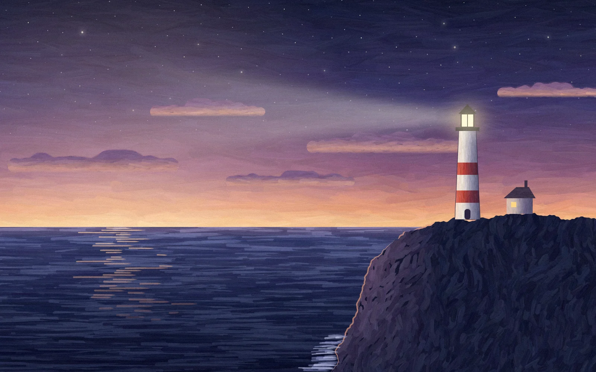
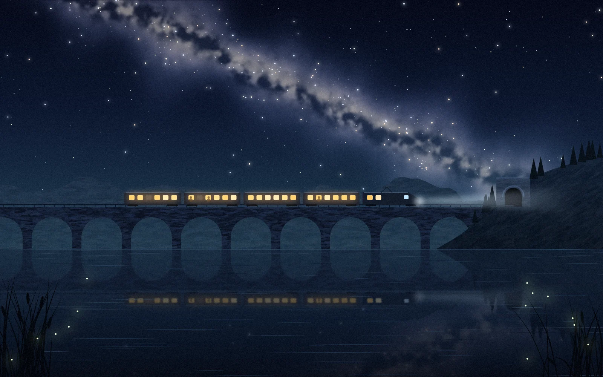
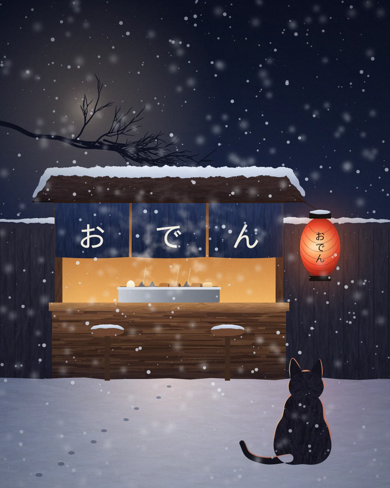
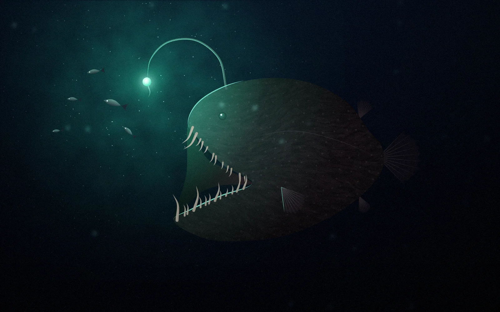
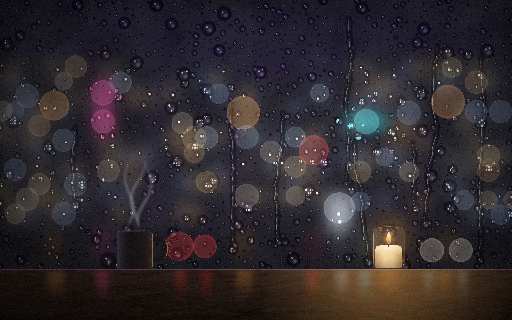
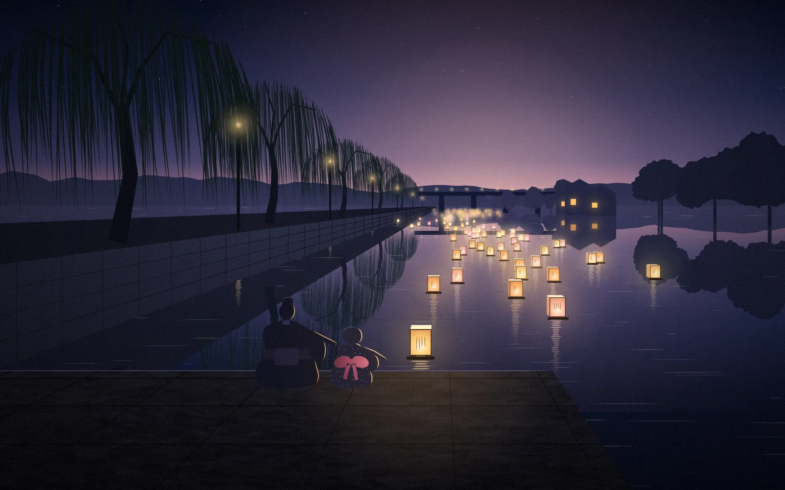
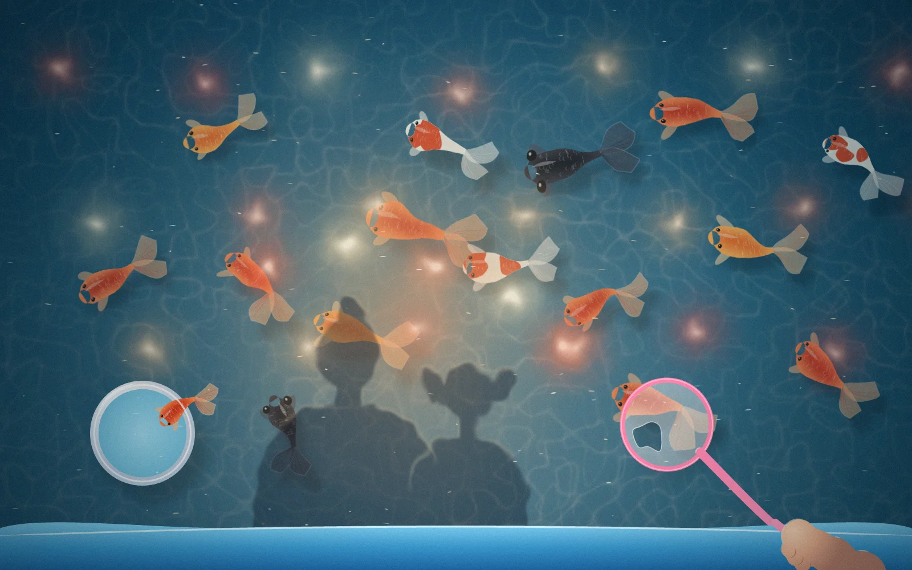
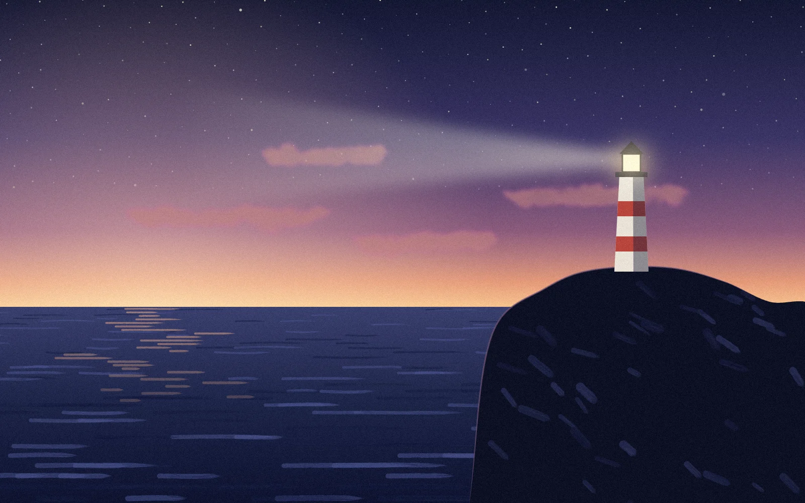
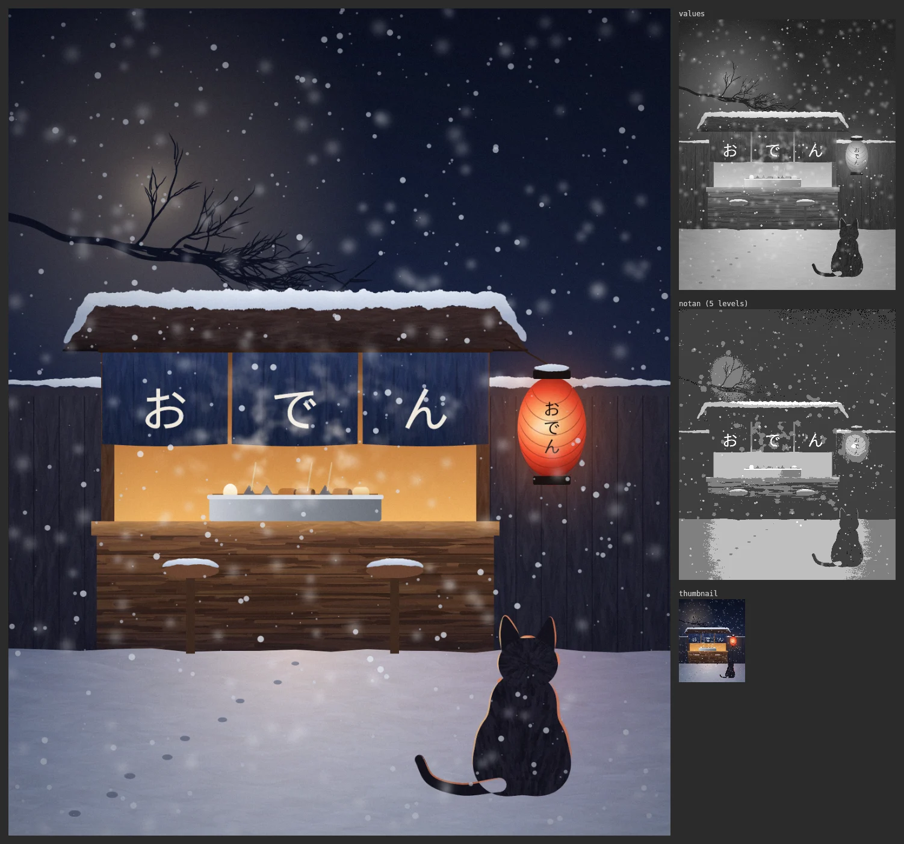

どうやって描いているか
絵は JavaScript のファイル 1 つで、形・筆致・光の置き方を座標で書いてある。それを自作の描画ツール（Node と Skia）で PNG にして、画像として見る。
書く → 描き出す → 見る → 直す
「見る」ための道具も作った。座標グリッド付きの拡大図と、明暗だけにした図と、小さなサムネイル。赤提灯は色では目立っていたのに、明暗だけにすると背景に埋もれていて、それで直せた。


失敗から生まれた道具
- 雲が四角い
blobUnion— 円を溶かし合わせて、雲や岩や猫の胴を作る- 縁の光が違う場所に出る
facing()— 光の方を向いている輪郭を選ぶ。上に向ければ雪が積もる- 天の川が綿あめになる
raster— 座標ごとに色を計算する、霧や星雲のための塗り- 猫の首が溶ける
- 部品を分けて重ね、
facing({ exclude })で隠れた輪郭を除く - アンコウが風船になる
illuminate— 描いたものにだけ当たる点光源- 水滴が黒いキャビアになる
lens— 背後を逆さに映し、周りの光も通す水滴- 灯籠の大きさと間隔を目分量で決められない
perspective()— 川面にメートル単位で置き、映り込みも同じ座標から作る- 筆を速くしたら枝の形が変わった
scope()— 要素ごとに乱数を分け、道具を直しても絵が崩れないようにする